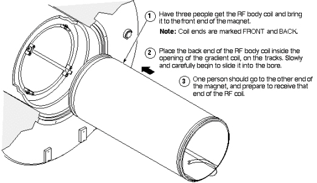

Operating Documentation
Direction 5440000, Rev# 5
Signa HDxt Service Methods
Module Version 1.0, Version Date 5/3/07
Operating Documentation |
| Required Persons | Preliminary Reqs | Procedure | Finalization |
|---|---|---|---|
| 3 | Not Applicable | 3-5 hours | Not Applicable |
| Item | Qty | Effectivity | Part# | Manufacturer | |
|---|---|---|---|---|---|
| Personal Protection Equipment | 1 | - | - | ||
| Composed of : | |||||
| Gloves | 1 | - | - | ||
| Safety Glasses | 1 | - | - | ||
| Safety Shoes | 1 | - | - | ||
| Long Sleeve Shirts and Pants | 1 | - | - | ||
| 5 Gallon Bucket to Collect Coolant | 1 | - | 2239133 | - | |
| Authorized Personnel Floor Sign | 1 | - | 2289812 | - | |
| Non-magnetic Tool Kit | 1 | - | 46-320273G4 | - | |
| Lockout/Tagout Equipment | 1 | - | - | ||
| Item | Qty | Effectivity | Part# | Manufacturer |
|---|---|---|---|---|
| Gradient chiller coolant | 1 | - | 2297672 | - |
| Absorbent Towels | 1 | - | - | - |
| Item | Qty | Effectivity | Part# | Manufacturer | |
|---|---|---|---|---|---|
| RF Coil, FRU Case and Shipping Skid. | 1 | - | 2208999-4 | - | |
| ||||
| Strong Magnetic Field! | ||||
| Ferrous materials can become dangerous projectiles in the presence of the magnetic field Produced by the Signa Magnet. | ||||
| Do not Bring any ferromagnetic tools or equipment into the magnet room. |
| ||||
| Dangerous Work Area! | ||||
| Use of heavy equipment for coil removal and replacement presents hazards to all personnel in the area. | ||||
|
| Condition | Reference | Effectivity |
|---|---|---|
Lockout/Tagout applied to all energy sources feeding the Magnet Enclosure and Coil. | - | - |
All Procedure complete to gain access to the RF Body Coil. | - | |
- | - | |
- | - |
Use a non-magnetic 5/16” slot screwdriver to extend the two (2) feet at the 4 and 8 o’clock positions at the bottom of each end of the replacement RF coil (total of 4 feet) about 0.3 inch (8 mm) from the outer diameter of the coil.
Confirm that the legs at the 12 o’clock position on each end of the RF coil are fully retracted and flush with the coil surface. These legs can only be adjusted with an Allen wrench.
Refer to Illustration 1 and install the replacement RF coil.
| NOTE: | Use care to ensure that the legs on each end of the RF coil do not catch on the edge of the fiberglass straps in the center of the gradient coil or tear the reflective TRS (Thermal Radiation Shield) film exposed on the inside, front of the gradient coil. |
Illustration 1: SLIDING NEW RF COIL INTO PLACE

Insert the coil into the bore until the RF coil studs pass through the slots in the rear end-bell surface and the RF coil surface contacts the rear end-bell.
Adjust the height of the rear legs to make the RF coil surface as level as possible with the rear end-bell surface.
Roughly adjust the height of the front legs.
Slightly rotate the RF coil as needed to until the rear RF coil studs pass through the slots on the rear end-bell. Rotational centering is not critical at this time.
Replace the front end-bell.
Attempt to place the front end-bell on the front of the RF coil so that studs match with the holes on the end-bell.
Adjust the height of the front legs, if necessary, in order to make the RF coil surface as level as possible with the front end-bell surface.
Seat the studs into the front end-bell and then rotate the end-bell and RF coil until the twenty-four (24) holes on the front end-bell match up with those on the magnet stainless-steel ring.
Install 8 nylon nuts to secure the front end bell to the RF Coil.
Install 8 nylon nuts to secure the rear end bell to the RF Coil.
Use a 8mm Allen wrench to install the twenty-four (24) M10 bolts in a star pattern on the end-bell and secure the end-bell to the enclosure.
From the front end-bell access panels reconnect the four (4) gradient coolant lines.
Replace the front end-bell access panels and secure using the eight (8) M6 screws.
Reinstall the bore temperature sensor cable into the groove in the front end-bell.
Coil the excess cable, leaving about 2 feet of the cable end free, and tie-wrap the cable to the studs securing the SRI to the magnet face.
Connect the end of the cable to J10 on the SRI.
Reinstall the bore lights onto the inside surface of the RF coil.
Reinstall the bore light caps using the two (2) M4 screws at the 10 o’clock and 2 o’clock positions on the front end-bell.
Fully retract the two (2) threaded front and rear RF coil legs (4 total) and then tighten the plastic nut until snug so that the legs do not vibrate. DO NOT OVERTIGHTEN PLASTIC NUT.
Reinstall the front and rear cover straps at the front and rear RF coil to end-bell interfaces.
Reconnect the coaxial cable bias and RF drive lines.
Reconnect the front and rear pair of coaxial cable bias lines labeled J3/J5 and J4/J6.
Reconnect the pair of rigid, blue coaxial cable I and Q RF drive lines at the rear of the RF coil to the connectors on the bulkhead interface.
Place the gradient coolant line valves behind the magnet in the open position.
Remove all lock-out/tag-out devices.
Refer to Restoration After Coil Installation.